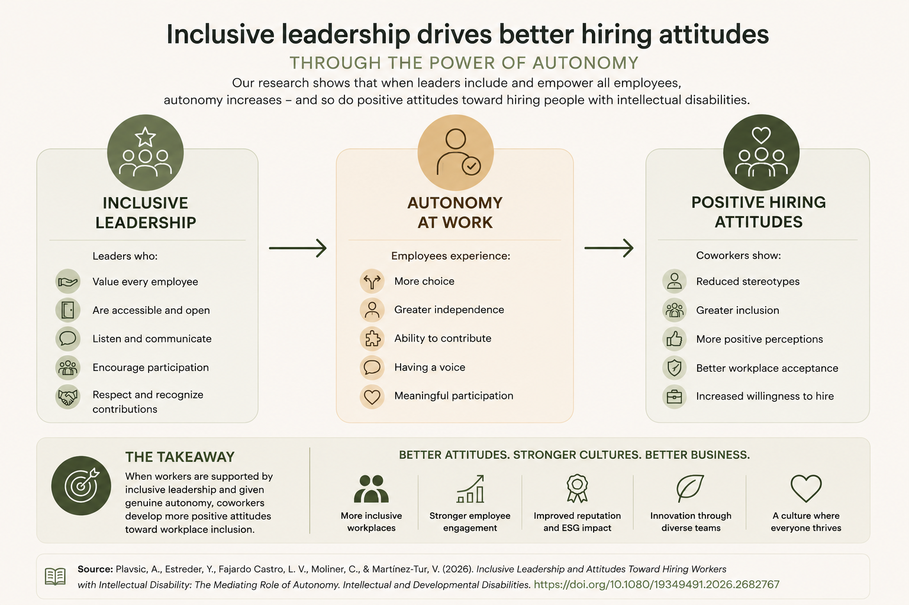

What gets in the way of inclusion at work?
A future article on the family, social, and radno factors that shape access to meaningful work and genuine inclusion.
Blog
Articles, public work, collaboration resources, and reflections on pressure, burnout, emotional wellbeing, and healthier organizations.

Refleksija o burnoutu, pritisku u HR-u, saradnji sa Occupational Health i održivom učinku u savremenim organizacijama.
Pročitaj članak ↗Research overviewBased on a co-authored Social Sciences article on organizaciono context, inclusion, basic psychological needs, and wellbeing at work.
Read article ↗A future article on the family, social, and radno factors that shape access to meaningful work and genuine inclusion.

Published in Intellectual and Developmental Disabilities. A plain-language overview of inclusive leadership, autonomy and positive hiring attitudes.
Read article ↗Public workSelected discussions, interviews, and initiatives connected to workplace wellbeing, burnout prevention, psychological support, and public mental health.
View public work ↗Radionice i predavanjaWorkshop and speaking themes for HR teams, organizations, clinics, coworkings, and professional communities.
Explore topics ↗